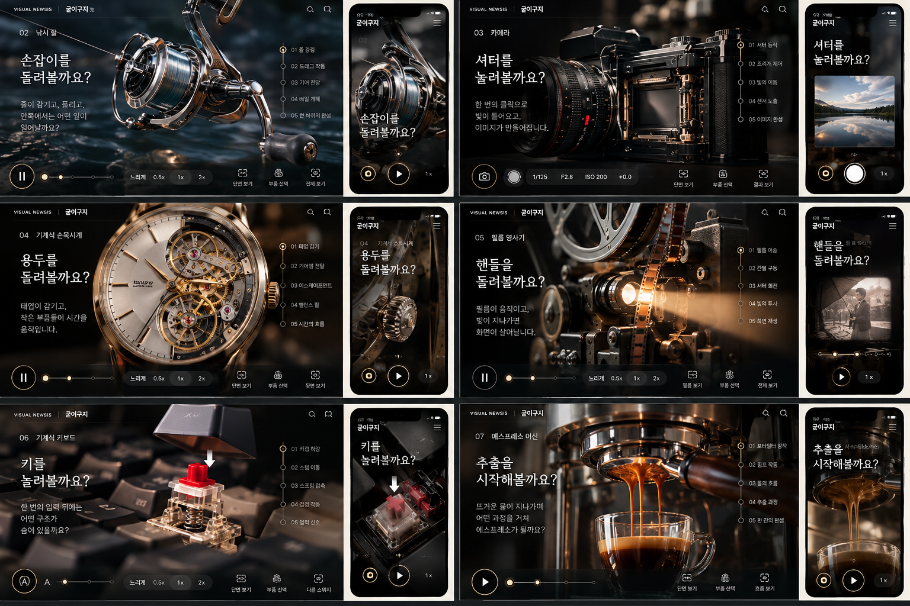

개발 검토용 · 정식 랜딩 아님
일곱 편 개발 현황
01 피아노는 기존 시제품입니다. 02~07은 입력·상태 연결 검증본이며 정밀 3D와 최종 디자인은 제작 중입니다.
01피아노연주·3D 관찰·소리 비교 ↗02낚시 릴첫 입력·관찰 기록 검증본 ↗03카메라첫 입력·관찰 기록 검증본 ↗04기계식 시계첫 입력·관찰 기록 검증본 ↗05필름 영사기첫 입력·관찰 기록 검증본 ↗06기계식 키보드첫 입력·관찰 기록 검증본 ↗07에스프레소 머신첫 입력·관찰 기록 검증본 ↗재의뢰해 받은 시각 목표
첫 시안의 단순 도형을 반려하고 다시 받은 이미지입니다. 기계 구조와 글자·버튼은 검증되지 않았습니다. 첫 체험에 재생 버튼을 두는 구성은 채택하지 않습니다.

ChatGPT 1차 디자인 원본
PC·모바일·세부 조작계 18개 시트를 회수했습니다. 기구의 형태와 완성도가 부족해 재작업을 요청했습니다. 아래는 채택 전 원본입니다.